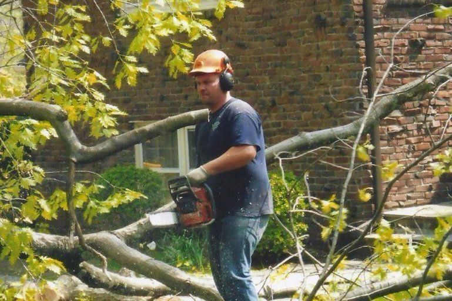
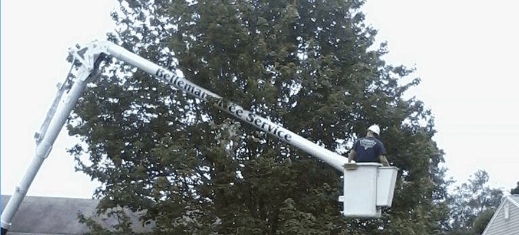
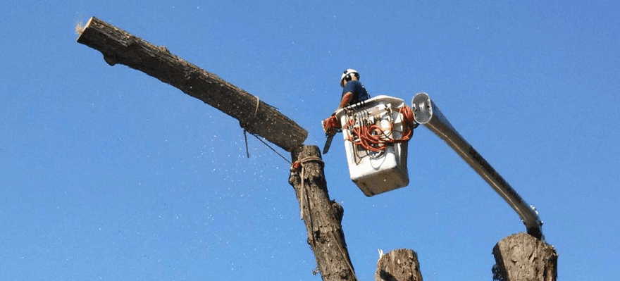
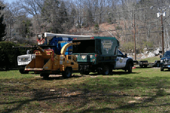
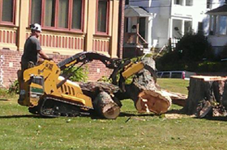
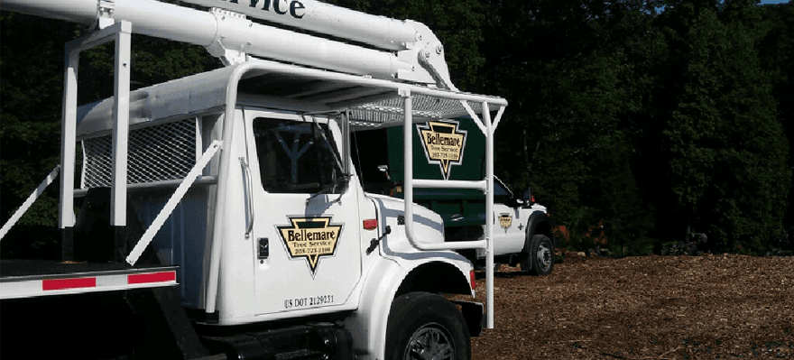

01
Tree removal
Leaning, dead, or too close to the house. We take it down in pieces and leave the yard usable. Tall trees are routine. The bucket reaches 65 feet, and the crane comes out when the tree calls for it.
Naugatuck Valley · Prospect · Oxford · Orange
Family-owned since 1998. An ISA certified arborist, a licensed and insured crew, and the crane and 65-foot bucket to match the tree in front of you.
Orange: 203-795-4430. Military and senior discount. We call you back with a price, not a pitch.

How a job starts
Knowing when to use ropes for a controlled lower, and when they are not needed, takes judgment. We look at the tree, the yard, and what is around it. Then we pick the safest way to do the work.
It is not about bringing more equipment. It is about knowing what the job requires.
The right technique. The right equipment. Professional workmanship from start to finish.

What we do

01
Leaning, dead, or too close to the house. We take it down in pieces and leave the yard usable. Tall trees are routine. The bucket reaches 65 feet, and the crane comes out when the tree calls for it.
02
A little trimming goes a long way. It is clearance around the roof, healthier growth, and fewer limbs over the driveway. Not a haircut for the sake of one.

03
Brush is chipped before we leave. Ask for the free wood chips. The job is not finished until the yard is clean and you are satisfied with it.

04
The stump can go the same day as the tree. That opens the lawn, the garden, or the spot where you want to replant.
05
Trees worth keeping can be cabled and stabilized. After a storm we also do insurance-related tree clearance, so the claim has a clean site to stand on.
06
Uniformed climbers, a 65-foot bucket, and crane service. Residential yards, commercial properties, and municipal work across the Valley.
When it cannot wait
A tree on the roof, the driveway, or the garage. Storm damage and hazardous limbs. Call and a person answers. We work day or night.
Call 203-723-1199 nowOrange and nearby: 203-795-4430

The company
Bellemare Tree Service LLC is family-owned and operated. We have been in business since 2008, and we have been serving Connecticut since 1998. Customers ask for Chris and Melissa by name.
Fully licensed and insured. Professional climbers. Residential, commercial, and municipal tree care. Fair, prompt, and courteous, and we do not leave until you are satisfied.
From customers
Very professional, on time, and reasonably priced. We highly recommend them.
Honest, dependable, and they clean up after themselves.
They arrived early and removed the tree from the driveway and the blocked garage.
Where we work
Based at 251 Quaker Farms Rd, Oxford. We work these towns, and the roads between them.
Free estimate
Send the town, what you need, and whether it is a storm. A photo of the tree helps. If this is an emergency, call. Do not wait on a form.